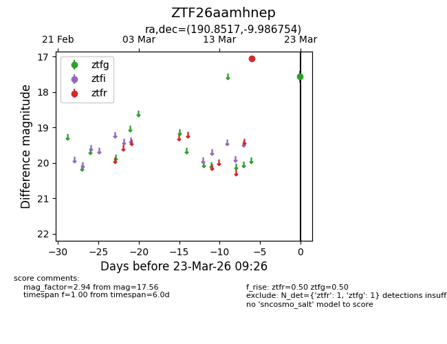
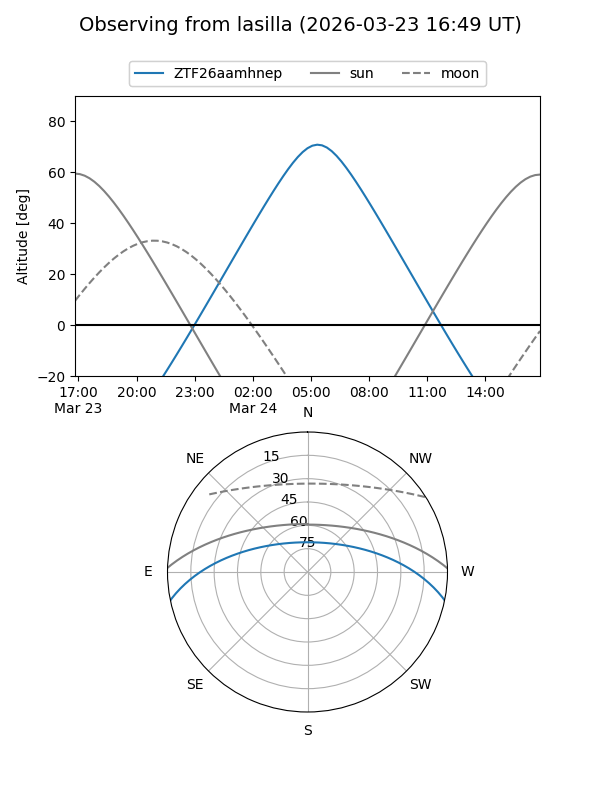
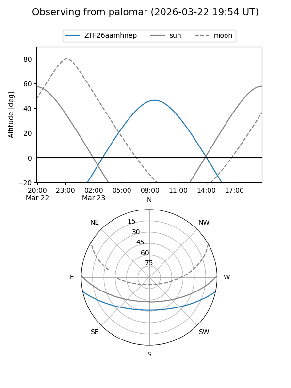
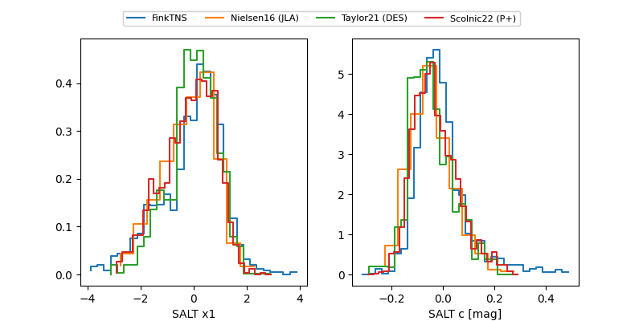

ZTF26aamhnep
Target ZTF26aamhnep at 2026-03-23 09:28
Aliases and brokers:
FINK: link
Lasair: link
ALeRCE: link
alt names
ZTF26aamhnep (ztf,fink_ztf)
Coordinates:
equatorial (ra, dec) = 190.8517,-9.98675
equatorial (HMS+DMS) = 12:43:24.42,-09:59:12.31
galactic (l, b) = (299.6578,+52.83393)
Flags:
Photometry:
last ztfg=17.56, ztfr=17.06
1 ztfg, 1 ztfr detections
Lightcurve

Visibility


Additional plots
